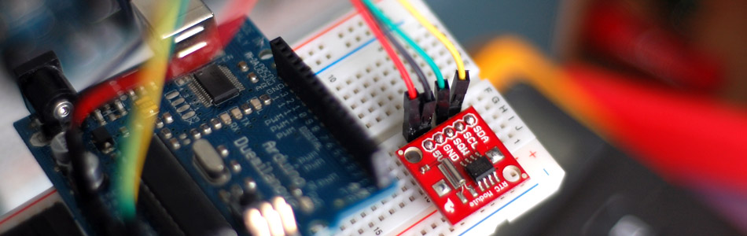

Do You Have The Time? DS1307 RT Clock + Arduino

For this article we will be discussing and using Sparkfun's RTC Module because it incorporates everything you need to make it work, including a backup battery good for a minimum of 9 years. It also comes with the time preset so you may not even need to configure it when you get it.
Why write this article?
If you look around, this chip has been used for years, and there are dozens of tutorials on using it. So why write another? I read a lot of them and they all had slightly different information, and most of them talked about the chip without the crystal or other needed addons. So im writing this specifically about using Sparkfun's RTC module version, and specifically for use on an Arduino.
About
The DS1307 is actually a very simple I2C chip. It just gives you back 7 bytes of information that is the time. So all we need to do is receive it ... and transcode it to decimal. "Transcode it to decimal?!?" Yeah, don't worry, it sounds scary, but it's not. See the DS1307 encodes all the data in "Binary Coded Decimal" or BCD. BCD is just a way to encode numbers, and works by encoding each digit in 4 digits of binary... like so:
157 = 0001 0101 0111
1 = 0001
5 = 0101
7 = 0111
Normally you would say that 157 = 10011101. But that is 157, BCD encodes each digit separately. 1, 5, 7 not 157. hence 0001, 0101, 0111 not 10011101.
Ok, now that we know we will be receiving the data as BCD, we just need a way to convert that to decimal. Luckily, John Boxall over at TronixStuff (incredibly awesome site) has a pretty simple function to do that for us. Lucky for me too because my method was much more complicated.
{kind=link}
Time Shifting
Like all clocks, minus maybe atomic clocks, this clock isn't perfect. Just as the clock on your microwave, the time on this chip will shift. It uses a crystal oscillator to be as precise as possible, but these are susceptible to drift based on temperature changes and magnetic fields, so it's going to shift. How much? Well the spec sheet is a little vague about that. But from what I have read, about one minute per month is considered normal. If this is just too much drift, you do have other options - The DS3234 clock's drift is +/- only 1min a year.
Because it drifts, you may at some point need to re-set the time on it. Because we at bildr don't like to leave you in the cold, we are including an example of that too.
Hooking it up
A few articles I have read have mentioned not connecting this or that, or the need for pull up resistors on the I2C Lines. But, the Arduino has built-in Pull-Up resistors for the I2C lines initiated by the Wire library , so unless you have more than one I2C device on the bus, you are fine without them.
Because the DS1307 is an I2C device (I2C is a 2-wire serial connection), you jusst need to connect the SDA (Data) and SCL (Clock) lines to your Arduino for communication. On your Arduino (everything but the mega) SDA is on analog pin 4, and SCL is on analog pin 5. On an arduino mega, SDA is digital 20, and SCL is digital 21.
Code
If you intend to use the clock to set alarms and trigger events based on time, then you should take a look at Lady Ada's library for this. It's more advanced, and allows you to make alarms, and check how much time is left and so on.
Our code for this is purposely oversimplified. I wasn't sure how to frame it, but because this chip is petty simple, I wanted to show it to you in the code. For this reason, and because the chip comes with the date set from Sparkfun, we are going to leave out the code for setting it from the first example. The second example includes code for setting the time.
#include "Wire.h" #define DS1307_ADDRESS 0x68 void setup(){ Wire.begin(); Serial.begin(9600); } void loop(){ printDate(); delay(1000); } byte bcdToDec(byte val) { // Convert binary coded decimal to normal decimal numbers return ( (val/16*10) + (val%16) ); } void printDate(){ // Reset the register pointer Wire.beginTransmission(DS1307_ADDRESS); byte zero = 0x00; Wire.write(zero); Wire.endTransmission(); Wire.requestFrom(DS1307_ADDRESS, 7); int second = bcdToDec(Wire.read()); int minute = bcdToDec(Wire.read()); int hour = bcdToDec(Wire.read() & 0b111111); //24 hour time int weekDay = bcdToDec(Wire.read()); //0-6 -> sunday - Saturday int monthDay = bcdToDec(Wire.read()); int month = bcdToDec(Wire.read()); int year = bcdToDec(Wire.read()); //print the date EG 3/1/11 23:59:59 Serial.print(month); Serial.print("/"); Serial.print(monthDay); Serial.print("/"); Serial.print(year); Serial.print(" "); Serial.print(hour); Serial.print(":"); Serial.print(minute); Serial.print(":"); Serial.println(second); }
RUNNING THE FOLLOWING CODE WILL RESET THE TIME
You will need to set the correct time in the setDateTime function - I did it this way to be a little cleaner looking. Also because the time is set at setup(), it will set the time to that value every time the Arduino restarts. So after you have set it, either upload the above code, or comment out setDateTime from setup, and re-upload the sketch.
If you need to change the time a bunch, or just make it easy, you could set it up so you can change it via the serial terminal. That could be cool!
#include "Wire.h" #define DS1307_ADDRESS 0x68 byte zero = 0x00; //workaround for issue #527 void setup(){ Wire.begin(); Serial.begin(9600); setDateTime(); //MUST CONFIGURE IN FUNCTION } void loop(){ printDate(); delay(1000); } void setDateTime(){ byte second = 45; //0-59 byte minute = 40; //0-59 byte hour = 0; //0-23 byte weekDay = 2; //1-7 byte monthDay = 1; //1-31 byte month = 3; //1-12 byte year = 11; //0-99 Wire.beginTransmission(DS1307_ADDRESS); Wire.write(zero); Wire.write(decToBcd(second)); Wire.write(decToBcd(minute)); Wire.write(decToBcd(hour)); Wire.write(decToBcd(weekDay)); Wire.write(decToBcd(monthDay)); Wire.write(decToBcd(month)); Wire.write(decToBcd(year)); Wire.write(zero); //start Wire.endTransmission(); } byte decToBcd(byte val){ // Convert normal decimal numbers to binary coded decimal return ( (val/10*16) + (val%10) ); } byte bcdToDec(byte val) { // Convert binary coded decimal to normal decimal numbers return ( (val/16*10) + (val%16) ); } void printDate(){ // Reset the register pointer Wire.beginTransmission(DS1307_ADDRESS); Wire.write(zero); Wire.endTransmission(); Wire.requestFrom(DS1307_ADDRESS, 7); int second = bcdToDec(Wire.read()); int minute = bcdToDec(Wire.read()); int hour = bcdToDec(Wire.read() & 0b111111); //24 hour time int weekDay = bcdToDec(Wire.read()); //0-6 -> sunday - Saturday int monthDay = bcdToDec(Wire.read()); int month = bcdToDec(Wire.read()); int year = bcdToDec(Wire.read()); //print the date EG 3/1/11 23:59:59 Serial.print(month); Serial.print("/"); Serial.print(monthDay); Serial.print("/"); Serial.print(year); Serial.print(" "); Serial.print(hour); Serial.print(":"); Serial.print(minute); Serial.print(":"); Serial.println(second); }
Extending this
This is a really simple tutorial, and yeah, maybe it was because I had less time than normal, but that shouldn't stop you from taking this and making something super cool with it. Even if you just combine it with last weeks tutorial, and have it report the time that the tag was read. A count down for your rocket launcher could be cool, maybe an alarm clock that pours water on you to wake you up. (Dont do that, that just sounds dangerous) Or you could hook this up to a voice synthesizer and have it say the time to you when you clap your hands.
My point is always the same: Take this simple thing and do something crazy with it, just please step away from the binary clock!
Article taken from bildr.org with minor changes - I am the original author of this content